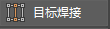
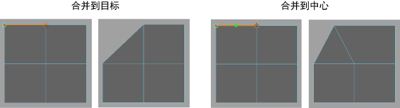

- 在“建模”(Modeling)菜单集 (F2) 中：“网格工具 > 目标焊接”(Mesh Tools > Target Weld) >

- 在“建模工具包”(Modeling Toolkit)中：展开“工具”(Tools)，单击 ，下方将显示选项
使用这些选项可设置在使用“目标焊接工具”(Target Weld Tool)时发生的情况。单击顶点或边并将其拖动到目标可合并所有选定顶点或边。有关如何使用该工具的详细信息，请参见合并多边形组件。
- 合并到(Merge To)
-
- 目标(Target)
- （默认）目标顶点将成为新顶点，源顶点将被删除。
- 中心(Center)
- 将在与源和目标组件等距的地方创建新顶点或边。然后移除源和目标组件。 
- 保持 UV
-
处于活动状态时，UV 将调整以保留 3D 纹理放置。该设置为默认设置。
在激活和未激活“保持 UV”(Preserve UVs)选项的情况下，在基本体上显示目标焊接。
- 如果希望在调整顶点或边时 3D 纹理发生扭曲，则禁用此选项。